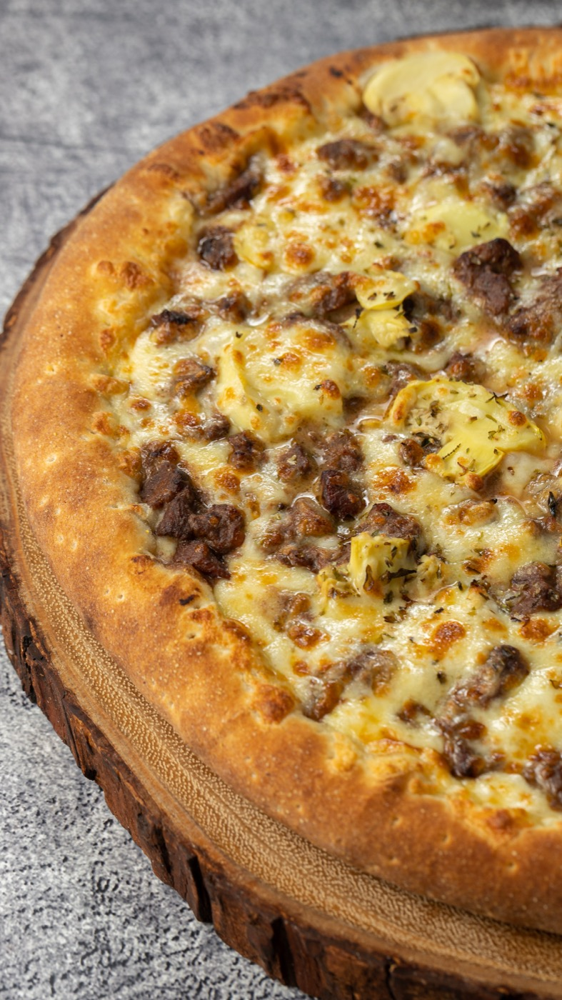

A linguagem visual da marca — os elementos gráficos próprios da Suprema: o halo bege de legenda, os rolinhos de massa cruzados e as linhas decorativas. Tudo derivado da logo, em preto, vermelho e bege.
A caixinha bege atrás do texto não é um retângulo — é um halo dilatado que segue o contorno das letras, gerando bordas arredondadas orgânicas. É o detalhe que diferencia a Suprema do genérico.

#FFEBDC. Técnica oficial (peças/stop motion): ImageMagick -morphology Dilate Disk:26 sobre o canal alpha do texto. Texto em preto. Nunca usar caixa retangular sólida.Os dois rolinhos de massa em "×" vêm do topo da logo. Funcionam como selo, ponto de atenção e ornamento — sempre em vermelho ou branco, nunca distorcidos.
No topo do nome, como na logo — fecha a composição.
Centralizado entre duas linhas, separa blocos.
Pequeno, marca itens de lista ou destaques.
Vermelho #D62020 sobre claro · branco sobre escuro/foto. Nunca outra cor.
Os filetes horizontais da logo — acima e abaixo do nome — viram divisórias da marca. Use com o "×" no centro para um respiro elegante entre seções.
Os rolinhos repetidos formam um padrão sutil para fundos e texturas — em bege/vermelho sobre o preto, baixa opacidade, sem competir com o conteúdo.
Bases prontas em preto, vermelho e bege, com a logo e a área segura. Escolha o formato do post.